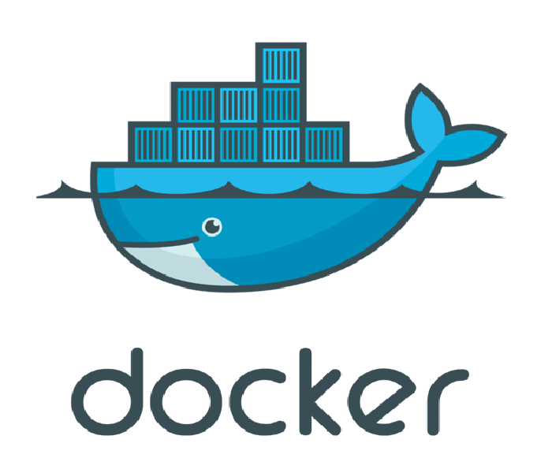
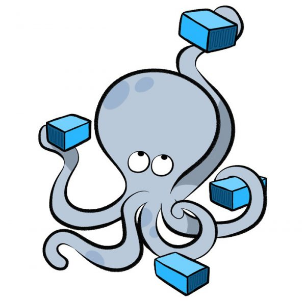
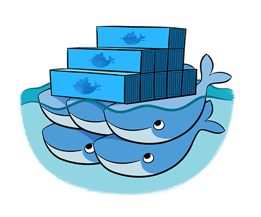
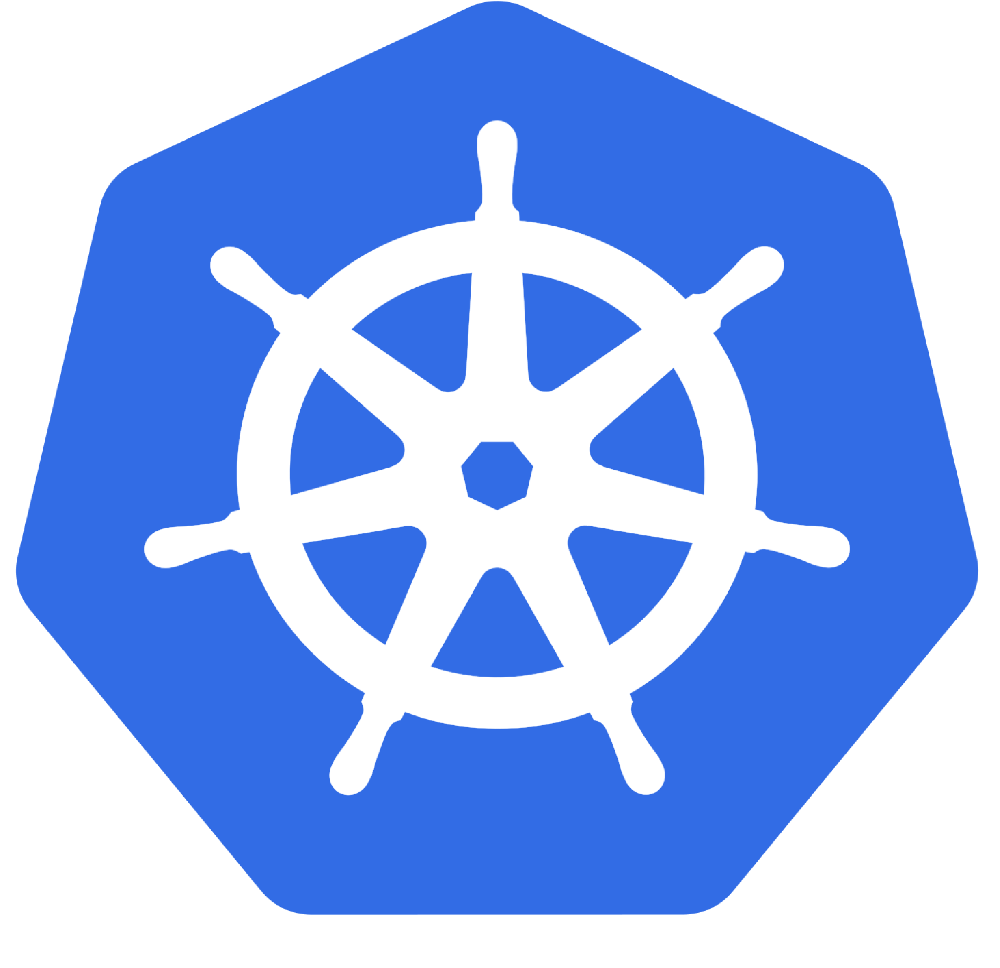
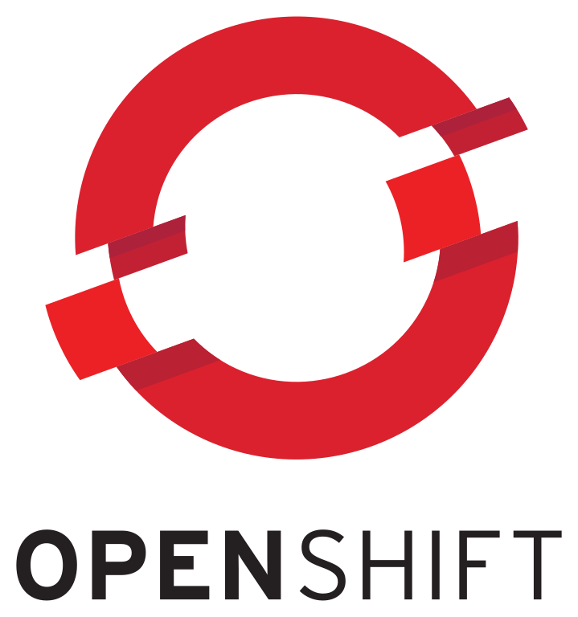

Sobre Mí
About Me
Hola, mi nombre es Nicolás Pozzi, un DevOps Engineer con más de 3 años de experiencia en la administración de infraestructuras cloud, automatización de procesos, monitoreo y gestión de servidores. En mi trayectoria adquirí un profundo conocimiento en la administración de servidores y redes, y luego evolucioné hacia roles de DevOps, implementando soluciones escalables y seguras utilizando tecnologías como AWS, Terraform, Kubernetes, Docker y más.
Hello, my name is Nicolas Pozzi, a DevOps Engineer with more than 3 years of experience in cloud infrastructure administration, process automation, monitoring, and server management. In my career I gained deep knowledge in server and network administration, and then evolved into DevOps roles, implementing scalable and secure solutions using technologies such as AWS, Terraform, Kubernetes, Docker and more.
Habilidades Clave
Key Skills







Experiencia Laboral
Work Experience
System Administrator / SRE - DevOps
System Administrator / SRE - DevOps
Kolektor UT
oct. 2022 - actualidadOct 2022 - Present
Analista de Infraestructura
Infrastructure Analyst
LOYAL Solutions
abr. 2022 - sept. 2022Apr 2022 - Sep 2022
Consultorías de Infraestructura
Infrastructure Consultancies
Profesional independiente
ene. 2021 - mar. 2022Jan 2021 - Mar 2022
Soporte Técnico
Technical Support
Empresa Local
feb. 2020 - dic. 2020Feb 2020 - Dec 2020
Proyectos Destacados
Featured Projects
Algunos de los proyectos en los que he trabajado.
Monitoreo General de Recursos
General Resource Monitoring
Implementé un sistema de monitoreo integral para servidores (Windows, Linux, Kubernetes, OpenShift) y URLs, utilizando Prometheus como backend y Grafana como frontend. El sistema incluye:
I implemented a comprehensive monitoring system for servers (Windows, Linux, Kubernetes, OpenShift) and URLs, using Prometheus as the backend and Grafana as the frontend. The system includes:
- Monitoreo del estado de salud de URLs con alertas en tiempo real.
- Real-time health monitoring of URLs with alerts.
- Alertas personalizadas para métricas clave (CPU, memoria, disco).
- Custom alerts for key metrics (CPU, memory, disk).
- Predicción de llenado de disco y capacidad de almacenamiento.
- Disk space and storage capacity prediction.
- Separación de monitoreos: servidores no productivos, productivos y en AWS.
- Separate monitoring for non-production, production, and AWS servers.
Herramientas y Tecnologías
Tools and Technologies
- Backend: Prometheus
- Frontend: Grafana
- Alertas: Configuradas con PromQL
- Servidores: Windows, Linux
- Plataformas: Kubernetes, OpenShift, Docker, Docker Swarm
- Bases de datos y colas: Cassandra, SQS, Nifi
- Entornos: On-premise y AWS
Migración a Arquitectura Híbrida en AWS
Migration to Hybrid Architecture on AWS
Lideré la migración de una arquitectura basada en EC2 con Docker y ALB a una arquitectura híbrida que combina componentes serverless y tradicionales en AWS. Este cambio incluyó:
I led the migration from an architecture based on EC2 with Docker and ALB to a hybrid architecture that combines serverless and traditional components on AWS. This change included:
- Implementación de Cloudflare como primera capa de seguridad y caché.
- Implementation of Cloudflare as the first layer of security and cache.
- Configuración de CloudFront para la distribución de contenido y enrutamiento según paths.
- Configuration of CloudFront for content delivery and path-based routing.
- Uso de S3 para alojar aplicaciones estáticas, mejorando la escalabilidad y reduciendo costos.
- Use of S3 to host static applications, improving scalability and reducing costs.
- Implementación de AWS Lambda para lógica serverless en aplicaciones específicas.
- Implementation of AWS Lambda for serverless logic in specific applications.
- Mantenimiento de Application Load Balancers (ALB) y EC2 con Docker para aplicaciones dinámicas.
- Maintenance of Application Load Balancers (ALB) and EC2 with Docker for dynamic applications.
- Mejoras en seguridad con AWS WAF y políticas de seguridad en Cloudflare.
- Security improvements with AWS WAF and Cloudflare security policies.
- Automatización de despliegues con Terraform y Jenkins, acelerando la creación de ambientes.
- Deployment automation with Terraform and Jenkins, speeding up environment creation.
- Reducción de costos y mejora en la eficiencia operativa.
- Cost reduction and improvement in operational efficiency.
Herramientas y Tecnologías
Tools and Technologies
- Seguridad y Caché: Cloudflare
- Distribución de Contenido: CloudFront
- Almacenamiento Estático: Amazon S3
- Serverless: AWS Lambda
- Balanceo de Carga: Application Load Balancer (ALB)
- Contenedores: Docker en EC2
- Orquestación: Terraform
- Automatización: Jenkins
- Seguridad: AWS WAF y NGINX
- Monitorización: Grafana y Prometheus
- Registro de Contenedores: ECR (Elastic Container Registry)
- Gestión de Dominios: Route 53
Circuito de Backups General
General Backup Circuit
Desarrollé un agente de Python para realizar backups automatizados de carpetas, directorios del filesystem y contenedores de Docker. Este circuito de backups incluye:
I developed a Python agent to automate backups of folders, filesystem directories, and Docker containers. This backup circuit includes:
- Backups de carpetas y directorios del filesystem.
- Backups of folders and directories from the filesystem.
- Exportación de contenedores de Docker a archivos
.tar, que luego pueden importarse como imágenes de Docker. - Export of Docker containers to
.tarfiles, which can later be imported as Docker images. - Almacenamiento seguro de los backups en Amazon S3.
- Secure storage of backups in Amazon S3.
- Integración con Grafana y Prometheus para monitorear el estado de los backups.
- Integration with Grafana and Prometheus to monitor backup status.
- Alertas en caso de backups fallidos o si no se realizan backups durante más de 10 días.
- Alerts for failed backups or if no backups are made for more than 10 days.
- Creación automatizada de infraestructura con Terraform.
- Automated infrastructure creation with Terraform.
- Pipelines de Jenkins para ejecutar Terraform y gestionar jobs de backups.
- Jenkins pipelines to run Terraform and manage backup jobs.
Herramientas y Tecnologías
Tools and Technologies
- Lenguaje: Python
- Almacenamiento: Amazon S3
- Contenedores: Docker
- Orquestación: Terraform
- Automatización: Jenkins
- Monitorización: Grafana y Prometheus
- Alertas: Configuradas en Prometheus
- Infraestructura: Creación automatizada con Terraform
- Pipelines: Jenkins para ejecución de Terraform y jobs de backups